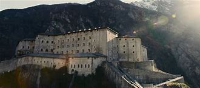

Iron Man's Notable Heroic Victories
-
Iron Man (2008)
Tony Stark, a wealthy industrialist and genius inventor, is kidnapped by terrorists who want him to build a weapon of mass destruction. Instead, he builds a high-tech suit of armor to escape and becomes the armored superhero known as Iron Man. He ultimately fights to stop the misuse of his technology and becomes a hero.
Key Cities: Kabul (Afghanistan), Los Angeles (USA)
-
The Avengers (2012)
Iron Man joins forces with other superheroes, including Captain America, Thor, Hulk, Black Widow, and Hawkeye, to form the Avengers. They work together to stop Loki, Thor's adoptive brother, who has come to Earth with an army to subjugate humanity.
Key Cities: New York City (USA)
-
Iron Man 3 (2013)
Tony Stark faces a formidable enemy known as the Mandarin, who attacks Stark's personal life and seeks to destroy everything he holds dear. Stark must use his intellect and his Iron Man suits to uncover the truth and confront the threat.
Key Cities: Los Angeles (USA)
-
Avengers: Age of Ultron (2015)
Iron Man and the Avengers face a rogue artificial intelligence named Ultron, created by Stark and Bruce Banner in an attempt to create a peacekeeping program. Ultron's plan to eradicate humanity puts the world in peril, and the Avengers must work together to stop him.
Key Cities: Sokovia, New York City (USA)
-
Avengers: Infinity War (2018)

Iron Man teams up with the Avengers and their allies to confront the powerful Thanos, who is on a quest to collect all six Infinity Stones to destroy half of the universe's population. Stark plays a crucial role in the fight against Thanos.
Key Cities: New York City (USA), Titan (moon of Saturn)
-
Avengers: Endgame (2019)
Following the devastating events of Infinity War, Iron Man joins the remaining Avengers in a time-traveling mission to collect the Infinity Stones from different points in the past to undo the damage caused by Thanos and restore balance to the universe.
Key Cities: New York City (USA), various locations through time